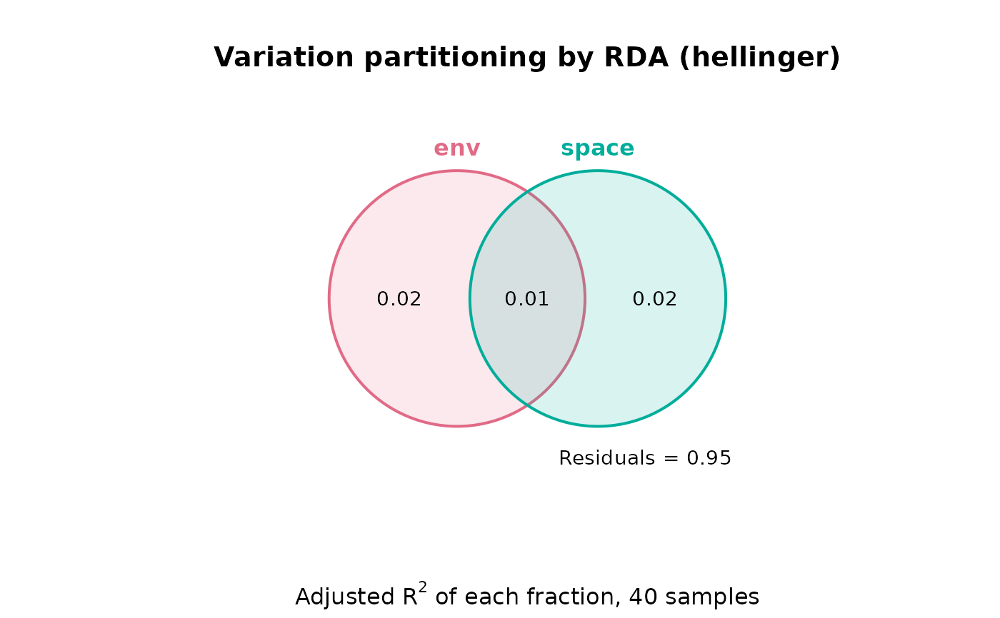

Splits the variation in a community among two to four sets of explanatory
variables (such as environment, space, and time): the fractions that each
set explains on its own, the fractions they explain jointly, and what
none of them explains. Each fraction is an adjusted \(R^2\) from
(partial) redundancy analysis of a count table (rda()), distance-based
redundancy analysis of distances (dbrda()), or canonical correspondence
analysis (cca()), as in vegan::varpart(), with the same results.
Usage
varpart(
x,
...,
data = NULL,
norm = "none",
pseudocount = NULL,
margin = 1L,
chisquare = FALSE,
permutations = 1000L,
seed = 0L,
cpus = n_cpus()
)Arguments
- x
The community: a
distobject of distances among the samples, such as frombeta_div()orbray(), for db-RDA; or a count table (samples \(\times\) features, or any of the table types listed under "Input Types"), for RDA, or withchisquare = TRUEfor CCA. A plain matrix is always a table; give distances as adistobject (as.dist(m)).- ...
Two to four sets of explanatory variables, each one of:
a one-sided formula over the columns of
data, such as~ ph + temp;a data frame, whose factor and character columns are coded as dummy variables, as
model.matrix()codes them;a numeric matrix, used as it is (such as spatial eigenvectors); or
a vector or factor (one variable).
The kinds may be mixed. Rows of a data frame, matrix, or named vector are matched to the samples of
xby name when both have names (other rows are ignored); without names, they must be in the samples' order. Name the sets to label them, as invarpart(x, env = ~ ph + temp, space = pcnm); otherwise they areX1,X2, and so on.- data
Sample metadata for the sets given as formulas: a data frame with one row per sample, matched to the samples of
xby row name (or, without row names, in the same order). Default:NULL.- norm
Normalize the count table first, as in
rda():'none','percent','chord','hellinger','binary','clr','rclr', or'log'.vegan::varpart(transfo = 'hel')isnorm = 'hellinger'. Not used for distances, and only'none'withchisquare = TRUE. Default:'none'.- pseudocount
Value added to counts to handle zeros when
norm = 'clr'or'log'. Ignored for other normalization methods. See Pseudocount section.- margin
The margin containing samples.
1if samples are rows,2if samples are columns. Ignored whencountsis a special object class (e.g.phyloseq). Default:1- chisquare
Partition the chi-square inertia of the count table by CCA, rather than its variance by RDA, as
vegan::varpart(chisquare = TRUE)does. Adjusted \(R^2\) values are then estimated by permutation, as incca(). Default:FALSE.- permutations
With
chisquare = TRUE: the number of permutations for each adjusted \(R^2\) (at least 1), or a matrix with one permutation of the samples per row (such as frompermute::shuffleSet()), so that results can be compared exactly with vegan's. The same permutations are used for every set and union of sets. Not used otherwise. Default:1000.- seed
With
chisquare = TRUEand a number ofpermutations: the random seed for the permutations. Not used otherwise. Default:0.- cpus
How many parallel processing threads should be used. The default,
n_cpus(), is the CPU cores this R process may use, within any limits set on it. Results are the same for anycpus.
Value
A data frame of class c('ecodive_varpart', 'data.frame'), with
one row per fraction of the Venn diagram, named as vegan names them:
[a] to [d] for two sets, [a] to [h] for three, and [a] to
[p] for four, the last being the residuals. The first rows are the
fractions unique to each set ([a] for the first set, [b] for the
second, ...). Columns:
sets: Which sets the fraction belongs to, such as"env"(unique toenv),"env & space"(shared by those two only), or"residuals".df: For a unique fraction, the number of model columns that its set adds to all the others (its rank, less any it shares with them).NAfor shared fractions and the residuals.r_squared: The fraction of the inertia, unadjusted, which is biased upwards (vegan showsNA).adj_r_squared: The adjusted fraction (Peres-Neto et al. 2006). A shared fraction may be negative.testable: Whether a (partial) constrained ordination can test the fraction: only the unique fractions, each by the set conditioned on all the others, as inrda(x, formula = ~ set + Condition(others)).
Attributes:
unions: A data frame of every set and union of sets (vegan's "Partition table"), with columnsfractions(the Venn fractions it comprises, such as"[a+d+f+g]"),df(its rank),r_squared,adj_r_squared, andtestable(allTRUE). Rows are named by the sets, joined by+.conditional: For three or four sets, a data frame of each set conditioned on some, but not all, of the others (vegan's "Controlling 1 table" and "Controlling 2 tables"), with rows named like"env | space"and the same columns asunions.NULLfor two sets.method:'rda','dbrda', or'cca'.norm: The normalization, for RDA.total: The total inertia: for RDA, the sum of squares of the centred (normalized) table (vegan's "Total variation (SS)"); for db-RDA, \(\sum d_{ij}^2 / n\) over pairs of samples; for CCA, the total chi-square inertia.n: The number of samples.set_labels: The sets as given, named by their names.n_perm: For CCA, the number of permutations per adjusted \(R^2\).
Details
Method
For each set and each union of sets, the constrained ordination of x
on that set's model columns gives \(R^2\), the fraction of the total
inertia it explains, and its adjusted \(R^2\). For RDA and db-RDA that
is Ezekiel's adjustment, \(1 - (1 - R^2)(n - 1)/(n - m - 1)\) for
\(n\) samples and \(m\) model columns (the rank); for CCA it is
estimated by permutation, as cca() does (Peres-Neto et al. 2006). The
fractions of the Venn diagram are then sums and differences of those
values: with two sets X1 and X2, \([a] = R^2_{12} - R^2_2\),
\([b] = R^2_{12} - R^2_1\), \([c] = R^2_1 + R^2_2 - R^2_{12}\), and
the residuals \([d] = 1 - R^2_{12}\); with more sets, by inclusion and
exclusion. Model columns that are linear combinations of others (within
or between sets) are dropped from each union, as qr() decides with a
tolerance of 1e-7, so shared columns move into the shared fractions.
Only the unique fractions can be tested, each by a partial constrained
ordination of the set given all the others, as with permanova() on
x's distances and formula = ~ set + Condition(others).
Speed
For RDA and db-RDA, one pass over the table's non-zeros (or the
distances) gives the cross products of all the sets' columns, from
which every union's \(R^2\) follows without another pass, so the cost
is about that of a single rda() or dbrda() of all the sets together.
No \(n \times n\) matrix is formed, and sparse tables stay
sparse. For CCA, each of the \(2^k - 1\) unions of \(k\) sets is a
cca() with its permutations. Results are identical for any number of
cpus.
Differences from vegan::varpart()
The result is one data frame of the Venn fractions, with vegan's other tables as attributes; there is no plot.
r_squaredis given for the Venn fractions too.dfisNA, not0, for shared fractions and the residuals.Normalizations are ecodive's (
norm), notdecostand()'stransfo; there is noscale, and noaddfor distances.Samples are matched by name between
x,data, and the sets.
Same names in other packages
vegan::varpart() has the same name. When both packages are attached,
the one attached last masks the other; call ecodive::varpart() to be
sure.
Input Types
The counts parameter is designed to accept a simple numeric matrix, but
seamlessly supports objects from the following biological data packages:
phyloseqrbiomSummarizedExperimentTreeSummarizedExperiment
For large datasets, standard matrix operations may be slow. See
vignette('performance') for details on using optimized formats
(e.g. sparse matrices) and parallel processing.
Pseudocount
The pseudocount parameter is only relevant when norm = 'clr'
or norm = 'log'.
Zeros are undefined in the centered log-ratio (CLR) transformation and
in the log of proportions. If norm is 'clr' or
'log', pseudocount is NULL (the default), and
zeros are detected, the function uses half the minimum non-zero value
(min(x[x>0]) / 2) and issues a warning.
To suppress the warning, provide an explicit value (e.g., 1), or
replace the zeros first with replace_zeros(), whose
result needs no pseudocount.
Why this matters: The choice of pseudocount is not neutral; it acts as a weighting factor that can significantly distort downstream results, especially for sparse datasets. See Gloor et al. (2017) and Kaul et al. (2017) for open-access discussions on the mathematical implications, or Costea et al. (2014) for the impact on community clustering.
See aitchison for references.
References
Borcard, D., Legendre, P., & Drapeau, P. (1992). Partialling out the spatial component of ecological variation. Ecology, 73, 1045-1055. doi:10.2307/1940179
Peres-Neto, P. R., Legendre, P., Dray, S., & Borcard, D. (2006). Variation partitioning of species data matrices: estimation and comparison of fractions. Ecology, 87, 2614-2625. doi:10.1890/0012-9658(2006)87[2614:VPOSDM]2.0.CO;2
Examples
# 40 samples: two environmental variables, and coordinates.
set.seed(1)
meta <- data.frame(
ph = runif(40, 5, 8),
temp = runif(40, 10, 20),
x = runif(40),
y = runif(40) )
counts <- matrix(rpois(40 * 15, 4), 40, 15)
counts[, 1:5] <- counts[, 1:5] + round(3 * meta$ph + 4 * meta$x)
# tb-RDA on the Hellinger-transformed table.
vp <- varpart(
counts, env = ~ ph + temp, space = ~ x + y,
data = meta, norm = 'hellinger' )
vp
#> Variation partitioning by RDA (hellinger): 40 samples, 2 sets
#> Total inertia: 0.746472 (sum of squares; variance 0.0191403)
#>
#> env ~ph + temp 2 df, adj. R-squared 0.0326
#> space ~x + y 2 df, adj. R-squared 0.0227
#> All 4 df, adj. R-squared 0.0476
#>
#> +- env ---------------------+
#> | +-----------+---------------+
#> | [a] | [c] | |
#> | 0.0250 | 0.0076 | [b] |
#> | | | 0.0150 |
#> +---------------+-----------+ |
#> +- space -------------------+
#> Residuals [d] 0.9524
#>
#> sets df r_squared adj_r_squared testable
#> [a] env 2 0.0725 0.0250 TRUE
#> [b] space 2 0.0631 0.0150 TRUE
#> [c] env & space NA 0.0097 0.0076 FALSE
#> [d] residuals NA 0.8547 0.9524 FALSE
plot(vp)

# db-RDA on Bray-Curtis distances; a set may be a matrix.
varpart(bray(counts), ~ ph + temp, as.matrix(meta[, c('x', 'y')]), data = meta)
#> Variation partitioning by db-RDA: 40 samples, 2 sets
#> Total inertia: 0.344959
#>
#> X1 ~ph + temp 2 df, adj. R-squared 0.3252
#> X2 as.matrix(meta[, c("x", "y")]) 2 df, adj. R-squared 0.0999
#> All 4 df, adj. R-squared 0.4026
#>
#> +- X1 ----------------------+
#> | +-----------+---------------+
#> | [a] | [c] | |
#> | 0.3027 | 0.0225 | [b] |
#> | | | 0.0774 |
#> +---------------+-----------+ |
#> +- X2 ----------------------+
#> Residuals [d] 0.5974
#>
#> sets df r_squared adj_r_squared testable
#> [a] X1 2 0.3178 0.3027 TRUE
#> [b] X2 2 0.1041 0.0774 TRUE
#> [c] X1 & X2 NA 0.0420 0.0225 FALSE
#> [d] residuals NA 0.5361 0.5974 FALSE
# Test the fraction unique to `env`.
permanova(
euclidean(counts, norm = 'hellinger'),
data = meta, formula = ~ ph + temp + Condition(x + y) )
#> Permutational multivariate analysis of variance (PERMANOVA) of Euclidean Distance
#>
#> F = 1.485, p = 0.06, z = 1.628
#> Permutations: 999 (free)
#>
#> Model R2 = 0.07254. Model tested as a whole:
#>
#> Df SumOfSqs R2 F Pr(>F)
#> Conditional 2 0.0543 0.0728
#> Model 2 0.0542 0.0725 1.485 0.06 .
#> Residual 35 0.6380 0.8547
#> Total 39 0.7465 1.0000
#> ---
#> Signif. codes: 0 ‘***’ 0.001 ‘**’ 0.01 ‘*’ 0.05 ‘.’ 0.1 ‘ ’ 1